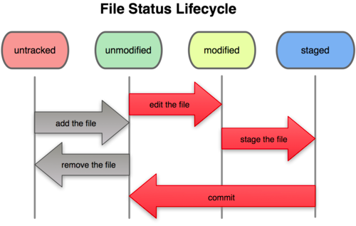
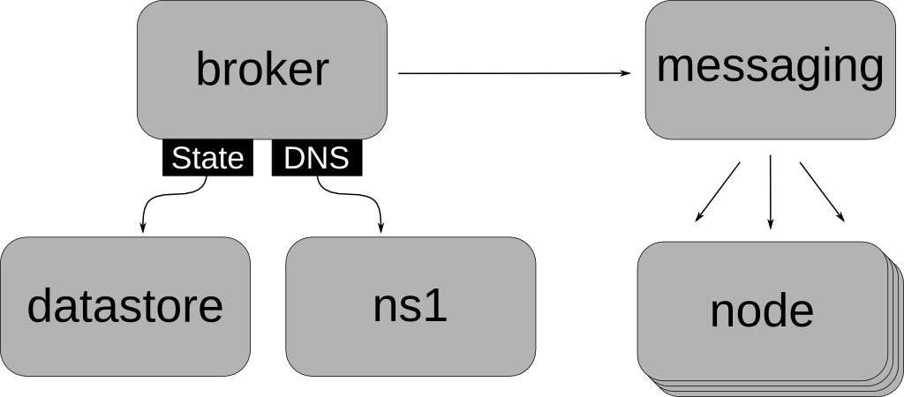
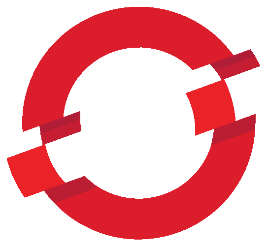
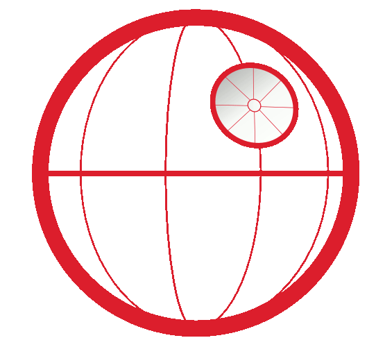

Agenda
Learn some about PaaS
Learn about OpenShift Online
Write and Deploy some code for Online
Move on to Bringing up the PaaS on AWS
Assumptions
You can write some code
You have a laptop
You will ask questions
You are hoping this will be fun!
What is OpenShift?
Kinda' like Amazon right?


Cook24v on Flickr
Ok what else do I get and what is the catch for OpenShift online ?
- The Catch is we are in developer preview right now for OpenShift Online
- Three gears – each one is half a gig of RAM, and 1 gig of disk (always free)
- Need more resources, just ask!
- OpenShift is free-as-in-beer AND free-as-in-freedom
"Too much talky talky not enough code!"
Dalbera on Flickr
Let's make an app
Prerequisites
- create account
- install client tools
- Run rhc setup
- Make your namespace now
In case you want to get back here.... http://aws2012-claytondev.rhcloud.com
Let's make a python app
- cd to a directory where you want to have your code live
- Do the following command rhc app create pythonrox python-2.6
- cd into pythonrox
Short diversion into git
Git
Distributed Version control
A local repository – on your laptop
A remote repository – on some other machine,like your gear
What happens on your local machine
What you do with Remote Repositories
Clone: take a remote repository and bring it local
Push: push your local changes back up to a remote
The 3 git commands you need to know to work with OpenShift
- Git add . (means add all news files as being tracked in the local repository)
- Git commit –am “your message” (means commit all my changes to the local repository with this message)
- Git push (means push from your local repository to the repository on your OpenShift gear)
Let's change our app
cd into the wsgi folder and open the file titled "application" for editing
Change the text inside the h1 tag
Save your changes
Now do the git commit and git push commands from the previous slide
Reload your web page and win!
Using Github and quickstarts
Github - www.github.com
Publicly hosted git repositories (private if you pay )
You care about it because:
- We have quickstarts there
- You can put your projects there for backup
Make our Python app a flask application
Go to our flask quickstart
Follow the instructions for after you have created an application
Modify the code in myflaskapp.py to return a different string for the base url ("/")
Do the git commit and push from before
Add postgresql DB - but using in code beyond the scope
Adding a database is as simple as:
rhc cartridge add postgresql-8,4 --app pythonrox
Now let's SSH in and show environment variables and using DB
All Done!
- Easy to get apps running in the cloud
- Good for devs - they don't have to call ops or manage servers
- Good for ops - they don't have to deal with developers
- Come join us
- Hope this was fun!
Introducing...
OpenShift Enterprise
When would I use OpenShift Origin versus OpenShift Enterprise?
Let's talk CloudFormations
Not just for Amazon
- CloudFormation templates work on OpenStack
- Heat - http://heat-api.org/
Show Me!
Now what are we building?
Main Components
Which AMI do I use?
Cloud-Init Pattern
Use a standard image and kickstart it to the correct setup on instantiation
- Start with RHEL Hourly
- Pass in script via UserData
- Run script on startup
- Notify on script completion
For Later
Discussion Thread - http://bit.ly/V2LoQr
ec2-run-user-data script - http://bit.ly/UXBIkr
Warning!
Crazy JSON ahead...
User Data Script
"AWSTemplateFormatVersion" : "2010-09-09",
"Description": "OpenShift CloudFormation Setup",
"BrokerInstance" : {
"Type" : "AWS::EC2::Instance",
"Properties" : {
...
"UserData" : { "Fn::Base64" : { "Fn::Join" : ["",[
"#!/bin/bash -x","\n",
"YOUR SCRIPT HERE","\n"
]]}}
}
}
Kickstarts
Community Kickstart - http://bit.ly/WogU6F
Enterprise Kickstart - Available w/ Evaluation
Convert to script:
sed -e '0,/^%post/d;/^%end/,$$d' openshift.ks > openshift-amz.shAdd callback section to end
Script w/ Kickstart
"UserData" : { "Fn::Base64" : { "Fn::Join" : ["",[
"#!/bin/bash -x","\n",
"cd ~/","\n",
"wget http://SOME_HOST/openshift-amz.sh","\n",
"export CONF_INSTALL_COMPONENTS='broker'","\n",
"sh openshift-amz.sh","\n"
]]}}
- Download kickstart script
- Set components to kickstart
- Run kickstart script
Wait / Callback Addition
Allows for each instance to complete before continuing
# Script: openshift-amz.sh PARAM1 PARAM2
# Parameter 1: Unique callback ID
# Parameter 2: Unique callback URL
... # Kickstart content
cat < /tmp/success_data
{
"Status" : "SUCCESS",
"Reason" : "Configuration Complete",
"UniqueId" : "$1",
"Data" : "Component has completed configuration."
}
EOF
curl -T /tmp/success_data $2
Template Waits
"WaitForBroker" : {
"Type" : "AWS::CloudFormation::WaitCondition",
"DependsOn" : "BrokerInstance",
"Properties" : {
"Handle" : {"Ref" : "BrokerWaitForInstanceWaitHandle"},
"Timeout" : "600"
}
},
"BrokerWaitForInstanceWaitHandle" : {
"Type" : "AWS::CloudFormation::WaitConditionHandle",
"Properties" : {}
}
Script w/ Callback
"UserData" : { "Fn::Base64" : { "Fn::Join" : ["",[
"#!/bin/bash -x","\n",
"cd ~/","\n",
"wget http://SOME_HOST/openshift-amz.sh","\n",
"export CONF_INSTALL_COMPONENTS='broker'","\n",
"sh openshift-amz.sh 'BROKER_ID' '", {"Ref" : "BrokerWaitForInstanceWaitHandle"} ,"'", "\n"
]]}}
Same approach as before but now pass in parameters to kickstart script with unique id and reference to wait handle
Rinse, repeat...
Kickstart broker, node, datastore, messaging, ns1
Community Instructions - http://red.ht/IxMQnd
Enterprise Instructions - Available w/ Evaluation
DNS Setup
- Primary components in Route 53 DNS
- e.g. broker, node, ns1, etc.
- Application subdomain delegated to ns1
DNS Template
"BrokerDNSRecord" : {
"Type" : "AWS::Route53::RecordSet",
"Properties" : {
"HostedZoneName" : { "mydomain.com." },
"Comment" : "Broker DNS Name",
"Name" : { "broker.mydomain.com." },
"Type" : "A",
"TTL" : "600",
"ResourceRecords" : [ {"Fn::GetAtt" : [ "BrokerInstance", "PublicIp" ]} ]
}
},
Creates an A record using the instance public ip
Public to Private
In 2 commands
Well, 3
LIBRA_SERVER=broker.amz.cloudydemo.com rhc setup
rhc app create pythonrox python-2.6
rhc snapshot restore pythonroxApp Topology
(each box is a gear)
| Simple PHP |
|
| With Mongo |
|
| Web Scaling |
|
Big Picture
Big Picture
Lesson: Avoid single point of failure
Philosphies
- Two tiers - management / apps
- Scale independently
- Limit cross tier traffic
- Do expensive stuff on gears
-
Management HTTP Traffic
-
- Rest API Broker 1
- ...
- Rest API Broker N
- <=>
- MongoDB
-
Messaging Bus
-
- Node 1
- Node 2
- Node 3
- ...
- Node N
-
Application Traffic (HTTP, SSH)
-
- Message Bus
- Admin SSH
Node 1
- Gear 1
httpd
- Gear 2
httpd
- Gear 3
httpd
- ...
- Gear N
httpd
- httpd
- App DNS records point to this node's IP
- Apache routes vhost for app to gear 1
-
- Message Bus
- Admin SSH
Node 1
- Gear 1
httpdHAProxy
- Gear 2
httpd
- Gear 3
httpd
- ...
- Gear N
httpd
- httpd
- Gear 1 still serves vhost requests for the app
- HAProxy routes from Gear 1 to Gear 3 + others
Where am I?
(Vegas, baby)
I'm on a gear
Gear is container for parts of my app
One app can utilize many gears
One node can run many gears
What can I do?
(apologies to XKCD)
Secure Multitenancy
- Isolate userspaces from each other (Namespaces/MCS)
- Whitelist allowable actions (SELinux)
- Limit CPU and memory use (CGroups)
- Separate app needs from platform (ACLs)
Show me the Node
- Where content lives
- Each user gets an MCS category
- Gear profiles and CGroups
- SELinux policy
- Node level commands
- Disk performance
- Backup the /var/lib/openshift directories
My Brain Hurts
- Play online now openshift.redhat.com
- Use these slides as reference
- Find us in our booth - 107
- Want to buy? Come to the booth!
Thanks!
Attributions
Clouds - http://www.flickr.com/photos/dotcompals/3449854626
Introduction - http://www.flickr.com/photos/alville/4513533483
Twitter - http://www.flickr.com/photos/rosauraochoa/3419823308
Make me a sandwich - inspired by http://xkcd.com/149/
Big Picture - inspired by Imperial Death Star